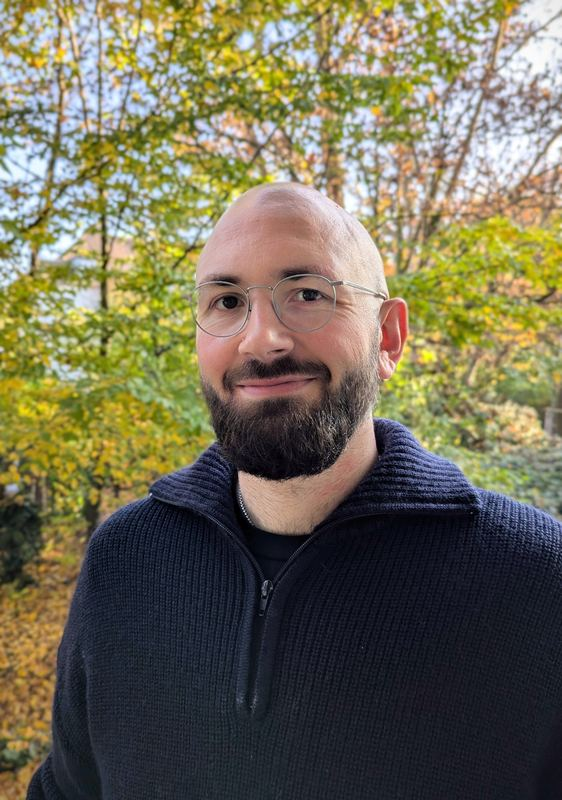

Jens F. Tillmann
Neuroscientist · Computational Behavioral Analysis · Experimental Systems
I work at the German Center for Neurodegenerative Diseases (DZNE) in Bonn. My research sits at the intersection of behavioral neuroscience, neurodegeneration, and machine learning, with an emphasis on interpretable models of behavior, closed-loop/behavior-dependent experiments, and open-source scientific software.
Research
Behavioral quantification
High-throughput behavioral analysis with ML-driven segmentation, tracking, and representation learning.
Closed-loop experimentation
Behavior-dependent experimental control and reproducible Python-first research workflows.
Helmholtz AI (Project Funding 2024)
Developing multimodal machine-learning models to predict network states during behavior, learning, and sleep — enabling closed-loop, state-targeted perturbations.
Software
Selected open-source projects and tools. (Link directly to repos.)
- github.com/JensBlack — code, tools, and research prototypes
- DeepLabStream — closed-loop behavioral experiments using markerless posture detection.
- A-SOiD — active-learning platform for expert-guided behavior discovery.
Publications
Selected papers (see ORCID for the full list).
- Tillmann JF, Hsu AI, Schwarz MK, Yttri EA (2024). A-SOiD, an active-learning platform for expert-guided, data-efficient discovery of behavior. Nature Methods. DOI · Code
- Schweihoff JF, Loshakov M, Pavlova I, Kück L, Ewell LA, Schwarz MK (2021). DeepLabStream enables closed-loop behavioral experiments using deep learning-based markerless, real-time posture detection. Communications Biology. DOI · Code
- Stockhausen A, Rodriguez-Gatica JE, Schweihoff J, Schwarz MK, Kubitscheck U (2023). Airy beam light sheet microscopy boosted by deep learning deconvolution. Optics Express 31(6):10918–10935. DOI
Public outreach & SciComm
Selected public outreach activities and talks.
Outreach
- Pint of Science Bonn (team). City Coordinator for the world-wide, public science festival bringing research to pubs in Bonn. Team page
Selected talks
- Identifying patterns of behavior with artificial intelligence. Public talk at Pint of Science Bonn ("Bridging the Gap between Brain and Behavior: The iBehave Perspective", May 23, 2023). Event page
- "Licht, Hirn, Action! Wie KI uns hilft, hinter die Kulissen des Verhaltens zu blicken". Short talk as part of the Science-Art project "Collective Neurogenesis" at Deutsches Museum Bonn (Feb 22, 2025). Uni Bonn news